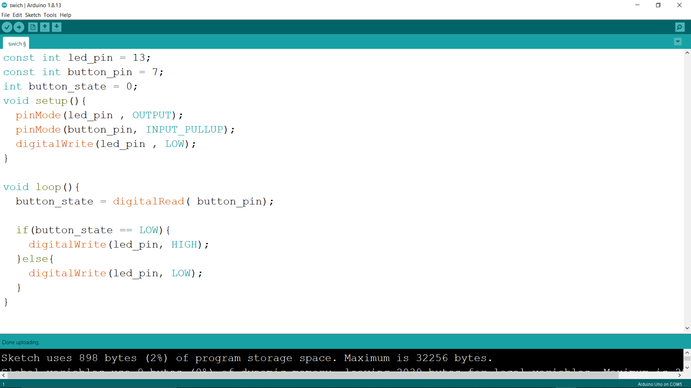
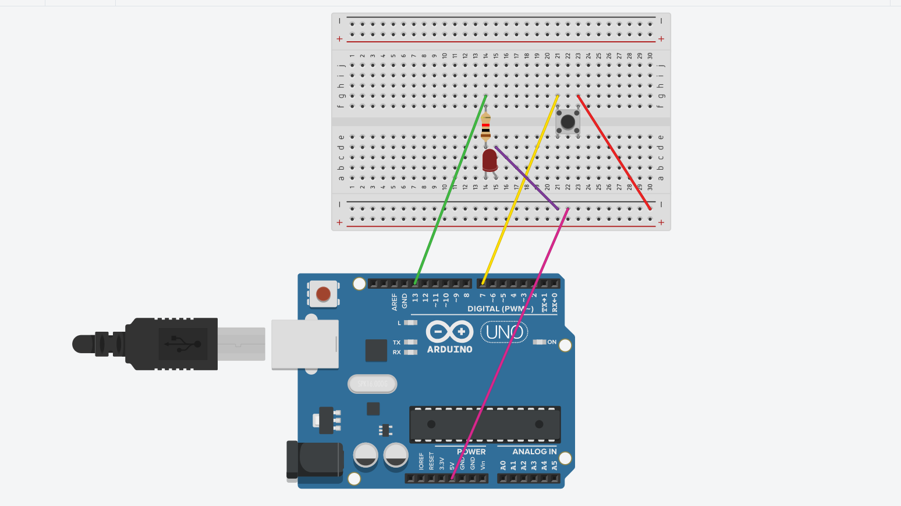
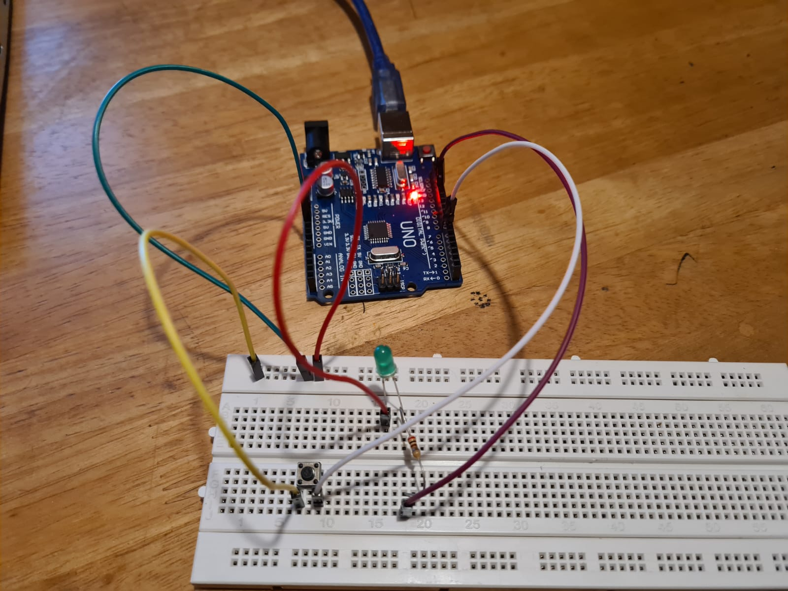
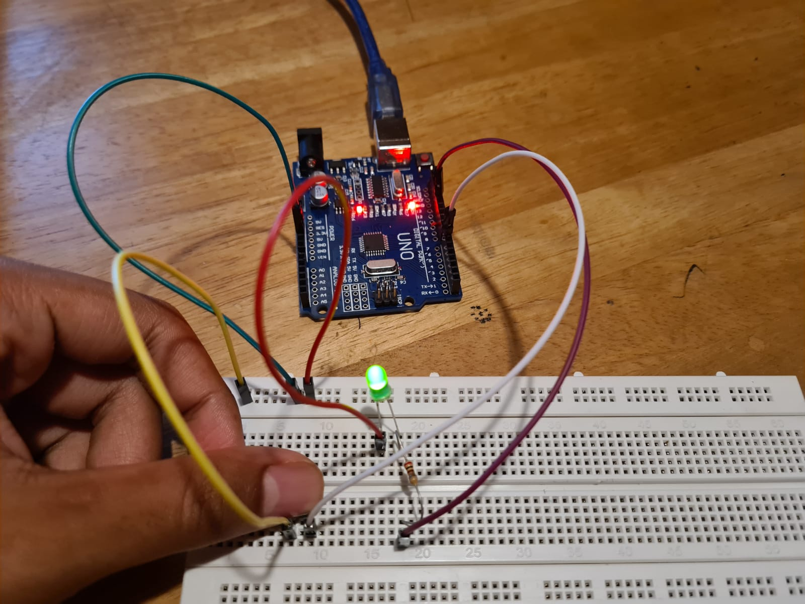

Embedded Programming:
Arduino Uno

The Arduino Uno is an open-source microcontroller board based on the Microchip ATmega328P microcontroller and developed by Arduino.cc. The board is equipped with sets of digital and analog input/output pins that may be interfaced to various expansion boards and other circuits.
Assignment
After searching through the internet for a simple arduino circuit, I choose a cicuit that is able to light up a single LED with a push button. This took me awhile to do eventhough it may seem very simple. This is my first time using Arduino and I must say that I am very happy for the results ive gotten.
The Code:  (Click to download file)
How program works: After stating the various pins and their outputs and inputs, I created a void loop with an if else statement inside. When I click on the pushbutton, the pushbutton's state will be low, which will in this case make the led state high. This turns on the led. However, as I release the pushbutton, the led turns off. This is due to the else statement which states that unless the button' state is low, the led will not light up.
Circuit in Thinkercad: 
Pictures of circuit:  
Video of circuit working: